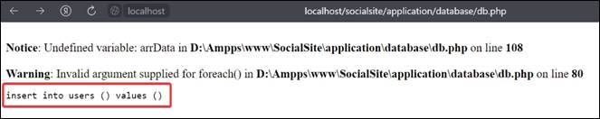
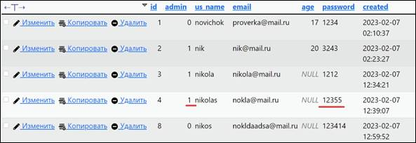
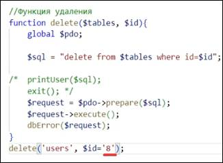

Задача урока: изучить функции добавления,
удаления и обновления данных.
На занятии мы
узнаем:
1.
Как работать с функцией
записи.
2.
Как работать с функцией
удаления.
3.
Как работать с функцией
обновления.
Функция INSERT
|
|
Функция «INSERT» - позволяет
добавить строки в таблицу. |
В качестве параметра используем таблицу. Ключи – админ, имя пользователя, электронная почта и пароль,
их значения – 1, nikola, nikola@mail.ru, 1212 соответственно (рис. 8.1).
Рис. 8.1. Функция insert
Добавим подготовку запроса, его выполнение и проверку
на наличие ошибок. Копируем код из первого пункта и вставляем на место второго (рис. 8.2).
Рис. 8.2. Подготовка запроса
Заменим quest на sql и добавим строчку insert(‘users’); (рис. 8.3).
Рис. 8.3. Добавляем insert
Мы сделали вставку
значений в базу данных. Проверим работу функции. Переходим в phpMyAdmin (рис. 8.4).
Рис. 8.4. Добавление пользователя
Теперь займемся добавлением масок.
Значения values нужно передать в качестве массива. Изменим values, создадим массив arrData и передадим в него запрос (рис. 8.5).
Рис. 8.5. Создаем массив
Проверяем работу кода на сайте localhost.
Обновим страницу и вернемся на phpMyAdmin. Там появится новый пользователь (рис. 8.6).
Рис. 8.6. Добавление пользователя
Так мы убедились в том, что массив можно подставлять как параметр и изменять
значения в нем.
Пропишем значения, которые будут получаться в
качестве параметров. Это нужно, чтобы при выводе функции подставлялись
определенные значения.
Объявляем переменные. col – колонка, mask – значение колонки (рис. 8.7).
Рис. 8.7. Объявление переменных
Нужно сделать так, чтобы у нас не было запятой перед ключами и их
значениями. Будем перебирать все эти значения с помощью запятой. При этом перед
самим «admin» запятая ставиться
не будет.
С помощью цикла foreach
будем проходить массив, разбитый на ключ и значение. Для этого добавим условие if.
Если счетчик равняется 0 (то есть цикл
проходится первый раз), то запятая не подставляется, ключ записывается
значением (рис. 8.8).

Рис. 8.8. Цикл foreach и условие
В противном случае col
будет записываться через запятую, после чего счетчик увеличится на 1 (рис.
8.9).
Рис. 8.9. Ключи и значения
Поменяем sql-запрос.
Вставим col и mask (рис. 8.10).
Рис. 8.10. Добавление col и mask
Для проверки результата выведем printUser, в который поместим sql. Добавим exit, чтобы закрыть выполнение всего кода ниже (рис. 8.11).
Рис. 8.11. Вводим printUser и exit и добавляем $arrData
Переходим на localhost и обновляем (рис. 8.12).

Рис. 8.12. insert into users и values с соблюдением пробелов
Удаляем printUsers и exit (рис. 8.13).
Рис. 8.13. Удаление printUser
Переносим запросы и заменяем массив на
параметр, поскольку сами параметры уже являются массивом arrData (рис.
8.14).
Рис. 8.14. Перемещение запроса
Заменим имя
пользователя (рис. 8.15).
Рис. 8.15. Замена имени пользователя
Переместим i++ и
массив arrData (рис. 8.16).
Рис. 8.16. Перенос массива
Изменим массив (рис.
8.17).
Рис. 8.17. Меняем ключи на правильные
Добавим else и вставим в него строчки с ключом и значением. Перенесем i++
внутрь foreach (рис. 8.18).
Рис. 8.18. Добавление else
Через двойные кавычки
подставляем одинарные кавычки в коде foreach (рис. 8.19).
Рис. 8.19. Добавление одинарных
кавычек
Добавим printUser и проверим вывод
данных на сайте (рис. 8.20).
Рис. 8.20. Добавление printUser
Перейдем на сайт.
После обновления страницы покажутся все полученные данные (рис. 8.21).
Рис. 8.21. Полученные с localhost данные
Закомментируем printUser (рис. 8.22).
Рис. 8.22. Комментирование кода
Перейдем на сайт и
обновим страницу. После этого появится ошибка (рис. 8.23).
Рис. 8.23. Ошибка в электронной почте
по ключу users.email
Зайдем в localhost и посмотрим на таблицу. Проблема в повторении электронной почты
пользователя. По нашим условиям, адрес электронной почты должен быть уникальным
(рис. 8.24).
Рис. 8.24. Повторение электронной
почты противоречит условиям об уникальности
Переходим в код и меняем
значение электронной почты (рис. 8.25).
Рис. 8.25. Меняем email
Перейдем на localhost и проверим работу сайта.
В базе данных после
обновления страницы пользователь появится в списке (рис. 8.26).
Рис. 8.26. Новая запись с новой
электронной почтой
Функции DELETE и UPDATE
Отделим комментарием функцию insert (рис. 8.27).
Рис. 8.27. Добавление комментария
|
|
Функция «UPDATE» -
используется для обновления существующих записей в таблице. |
Скопируем эту функцию и вставим ниже. Отделим ее комментарием
«Обновление строки в таблицах» (рис. 8.28).
Рис. 8.28. Часть кода для копирования и
добавления
Заменяем функцию insert на update. Так как строки в таблицах будут обновляться по id, необходимо его указать. Удалим строчку $_mask = ‘ ‘; и заменим ее col на str
(строка запроса) (рис. 8.29).
Рис. 8.29. Редактируем функцию
В sql заменим insert на update. Он будет обновлять таблицу.
Далее удалим into и
добавим set $str where id=$id (рис. 8.30).
Рис. 8.30. Замена insert на update
Удалим параметры us_name и email. Изменим insert на update (рис.
8.31).
Рис. 8.31. Удаление параметров us_name и email, замена insert на update
Перед функцией
закомментируем «insert» (рис. 8.32).
Рис. 8.32. Комментирование insert
Зададим параметр id = 4, чтобы проверить обновление id в нашей таблице. Также меняем массив arrData на param (рис. 8.33).
Рис. 8.33. Замена id на значение 4 и arrData на param
Удалим лишние строчки col и mask (рис.
8.34).
Рис. 8.34. Удаление строк
Заменим удаленные
строчки на $str = $str
.$key (рис. 8.35).
Рис. 8.35. Добавление строки
С помощью конкатенации добавляем значение value в одинарных кавычках. Удалим лишние строчки из else (рис. 8.36).
Рис. 8.36. Две выделенные строки ниже
также удаляем
Вместо удаленных строк col и mask запишем (рис. 8.37).
Рис. 8.37. Изменяем строку
Раскомментируем функцию printUser для проверки сайта на корректность работы (рис. 8.38).
Рис. 8.38. Снимаем комментарий
Обновим страницу. Сравним выведенные данные с
данными из таблицы базы данных. У пользователя с id=4
все значения совпадают. Он не является администратором (id=0),
и его пароль совпадает с выведенным на сайте (рис. 8.39 – 8.40).
Рис. 8.39. Полученные данные
Рис. 8.40. Данные из таблицы БД
Сделаем пользователя nikolas администратором.
Для этого в коде изменим значение admin на 1. Также изменим пароль с 123414 на
12355 (рис. 8.41).
Рис. 8.41. Меняем Admin и пароль
Обновляем страницу и получаем на выходе новые
данные (рис.
8.42).
Рис. 8.42. Обновленные данные
пользователя с id=4
Теперь закомментируем printUser и проверим функцию (рис. 8.43).
Рис. 8.43. Комментирование printUser
Обновим localhoct – ошибки отсутствуют (рис. 8.44).
Рис. 8.44. Отсутствие ошибок на сайте
Данные пользователя с номером id = 4 поменялись и в таблице базы данных (рис. 8.45).

Рис. 8.45.
Назначение
пользователя администратором и смена пароля
Закомментируем
строчку update users (рис. 8.46).
Рис. 8.46. Комментирование строки update
|
|
Функция «DELETE» - удаляет строку
из таблицы. |
Закомментируем последнюю строку и добавим еще один комментарий – «Функция удаления». Пропишем так, чтобы
функция удаляла строку из таблицы по id,
и добавим запросы (рис. 8.47).
Рис. 8.47. Создание функции удаления
Открываем таблицу базы данных и видим, что четвертый id удален (рис. 8.48).
Рис. 8.48. Отсутствие четвертого id
Попробуем удалить еще и восьмой id.
Меняем в коде значение id с 4 на 8 (рис.
8.49).

Рис. 8.49. Замена значения id на 8
Обновляем localhost и базу данных. Строка с восьмым id успешно удалена (рис. 8.50).
Рис. 8.50. Отсутствие восьмого id в базе данных
На этом восьмое занятие окончено!
В рамках этого занятия мы написали функции для
работы с данными, провели их запись, удаление и обновление.
На следующем занятии мы напишем обработчик формы регистрации и познакомимся с методами GET и POST, напишем валидацию для
формы регистрации.
После прохождения каждого занятия рекомендуем повторить все термины,
которые были изучены, а также закрепить пройденный материал, ответив на
контрольные вопросы.
|
Это нужно запомнить |
|
|
|
Функция «INSERT» - позволяет добавить строки в таблицу. Функция «UPDATE» - используется для обновления существующих
записей в таблице. Функция «DELETE» - удаляет строку из таблицы. |

Контрольные вопросы
1. Что такое values?
2. Что такое NULL?
3. Что делает Exit?